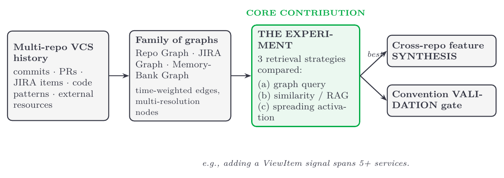

Engagement Structure
| University Principal Investigator & Researchers | Dr. Chris Brown (PI, Virginia Tech); Jason Cusati (GRA, Virginia Tech) |
|---|---|
| University | Virginia Tech, USA |
| eBay Co-Investigator | Ramesh Periyathambi |
| eBay VP / Head of Department | Rami El-Charif |
| Grant Amount Requested | $120,000 (one-year grant) |
Motivation and Objectives
At eBay, shipping a feature rarely touches a single codebase. Taking a codebase to be one repository, a feature is precisely what spans several of them — at eBay, typically five or more: changing how an item is displayed, priced, or measured propagates across separate services, owned by separate teams, and a developer must understand each one's APIs, conventions, and history before writing a line of code. On a large, long-lived codebase this understanding is the dominant cost: code-change tasks account for roughly 70% of development expenditure [14], a single feature can take a year or more once A/B testing is included, and the effort of bringing a developer — or a coding agent — up to speed on an unfamiliar repository is repeated from scratch every time [20]. The most acute bottleneck is review: every change, and increasingly every AI-generated change, must still be read and approved by a human.
This proposal is organized around three research questions. RQ1: how should a large, multi-repository code history — its commits, GitHub pull requests, and JIRA work items, together with the code patterns and external resources they reference — be represented so that a coding agent can query it? RQ2: which strategy for retrieving from that history makes an agent most efficient at multi-repository understanding, learning a system's features, styles, and cross-team collaboration patterns from the history that produced it rather than from a static snapshot of the current code? RQ3: can an agent so grounded synthesize a change that correctly spans several repositories, and can an automated gate validate the result against the team's own conventions? Enterprise deployments of AI developer tools already report substantial reductions in review-cycle time and onboarding load once that historical context is made available [12][13], which tells us the leverage is real; what is not yet known is how an agent should represent and retrieve that history to capture it.
Our answer has two parts. The first is a substrate: an agentic knowledge graph (KG) mined from eBay's own version-control history, spanning multiple repositories, rather than from current code alone. The second is the contribution we propose to eBay, and it is deliberately empirical: a systematic comparison of how an agent should retrieve from that history. We build the substrate once and evaluate three retrieval strategies over it, reporting which makes an agent most efficient at multi-repository understanding — a result eBay can learn from and extend regardless of which internal system eventually adopts it. A single, provenance-tagged history serves the work twice over: it is the substrate an agent uses to synthesize a change spanning several repositories, and the reference an automated gate uses to validate the resulting pull requests against the team's own conventions.
Why academic research? Representing a multi-repository code history as a family of queryable graphs, and determining empirically which retrieval strategy best supports a coding agent, are open problems spanning software engineering, AI, and knowledge representation. This is not an architectural gap to be plumbed over — eBay already has the infrastructure to store and link these artifacts — but a question of representation and retrieval: what structure over development history lets an agent capture institutional knowledge it otherwise rediscovers from scratch. A point solution wired to a single workflow would be a bandaid; the durable result is knowing which representation and retrieval strategy actually works, and that result transfers regardless of which system eventually adopts it. These questions require systematic investigation, not engineering alone, and exceed what an in-house team has the bandwidth to explore. A controlled, multi-metric study — measuring retrieval accuracy, review-cycle reduction, and cross-repository scaffold quality across the three strategies — is exactly what academic research is designed to provide.
Previous Work
Developed with Ramesh Periyathambi at eBay, this proposal engages a fast-moving literature; we position our contribution by what it does not claim as much as by what it does.
KG-grounded code generation is established — we extend it to history and to multiple repositories. Repository-level generation grounded in a code graph, with retrieval, generation, and verification agents, is an active 2024–2025 area: GRACG [3] proposes the same agent decomposition, SemanticForge [4] adds constraint-guided generation over a repository KG, and Athale and Vaddina [5] and the SWE-agent AutoCodeRover [6] show graph- and AST-grounded agents resolving real tasks. We adopt this machinery rather than reinvent it. What these systems encode is a current-code snapshot within a single repository — not the commits, PRs, and reviews that record how the code reached its present form, and not the relationships across repositories that an eBay feature must cross.
Enterprise and multi-repository code graphs are being built — we differ in purpose. The closest neighbors are recent and strong. Rao et al. [18] build a unified KG from JIRA, Git, code, and PRs for enterprise knowledge discovery, but for retrieval and question answering over one fused graph, not code generation. Prometheus [17] gives a coding agent a memory-centric unified code KG for issue resolution. CCCE [15] is the sharpest neighbor. It traverses a dynamic KG across enterprise codebases spanning hundreds of repositories, with adaptive risk-gating and end-to-end traceability. But its target is autonomous maintenance and calibration — dependency propagation, security freshness, remediation — not synthesizing a new feature from mined historical patterns. Our target is the opposite end of the lifecycle.
Repository memory and history mining — our substrate. Codified Context [19] equips agents with a directory of on-demand specification documents over a complex codebase, and Learning to Commit [16] states our core premise almost verbatim — that a repository snapshot reveals the final state but not the change patterns by which it was reached — distilling earlier commits into reusable skills. Both are single-repository. Frequent-subgraph mining over commit history yields interpretable, traceable change patterns [10], and LLM-augmented transformation-by-example automates recurring changes accepted into real projects [11]. For institutional knowledge, Knowledge Activation [12] turns enterprise knowledge into a graph agents traverse — but from human-curated units, and it flags staleness as unsolved. A KG mined continuously from version control, across repositories, is exactly the missing, self-updating substrate.
Automated code review is maturing — we make it convention-aware. Learning review edits from history [7] and agentic PR review against company rules [8] are established; recent work argues such tools should support rather than replace reviewers, to preserve knowledge transfer and shared ownership [9]. Our validation gate follows that principle, generalized to cross-repository conventions.
Our foundations. Our ICSE-FOSE 2026 position paper [1] argues for structured knowledge accumulation in software engineering. Our prior work on provenance-aware agentic knowledge graphs contributes the core architecture — AST extraction, ranking and validation agents, provenance tracking — that transfers to eBay's Java context, and VersiCode [2] shows version-aware code knowledge can be structured. eBay's enterprise KG, Compass, already links JIRA, repos, commits, PRs, and deployments; our KG extends it with the code-level pattern knowledge tickets don't capture.
The gap. Where these ideas have reached industry, they serve discovery and maintenance: enterprise knowledge graphs answer questions over fused JIRA, Git, and PR data [18], calibration engines keep large codebases healthy [15], and measurement studies confirm the review-cycle and onboarding gains once history is surfaced [12][13]. What none of them provides is a coding agent that builds new, cross-repository features from mined history. Three limitations recur, and we take each one on: prior code KGs are single-repository (we mine a cross-repository family of graphs); they encode a current-code snapshot rather than the change history that explains it (we mine version-control history, provenance-tagged); and where knowledge is graph-structured it is often human-curated and goes stale [12] (ours is mined continuously from version control and time-weighted, so recent conventions win). Above all, no prior work establishes which history-retrieval strategy makes a coding agent most efficient at multi-repository understanding. That comparison, and that self-updating cross-repository substrate, are the contributions of this proposal.
Methodologies & Approaches
The contribution of this project is the core experiment — a head-to-head comparison of how an agent should retrieve from code history. The parts that follow build toward it: we first construct the substrate the experiment runs over, then describe the experiment itself and how we evaluate it, and finally the cross-repository synthesis and validation it enables. The figure below summarizes the pipeline.

A family of history-mined graphs. We construct, over a bounded set of eBay's Java repositories, not one monolithic graph but a small family of interlinked graphs, because a multi-repository codebase has distinct kinds of structure that a single graph flattens. A Repo Graph relates services and repositories — dependencies, shared libraries, cross-team ownership, and call relationships — so that a feature's blast radius across repositories is explicit. A JIRA Graph links work items to the commits and pull requests that resolved them, and out to the external resources they cite. A Memory-Bank Graph holds per-repository living documentation an agent can traverse. The graphs share entities (the same service, commit, or ticket appears in more than one), and the agent projects the task-relevant view — onboarding, feature design, or review — rather than querying everything at once. Two design choices keep this tractable at codebase scale: history edges are time-weighted so recent conventions outrank stale ones, and Memory-Bank nodes are stored at multiple resolutions (summary for cheap traversal, full detail on demand). Every pattern is provenance-tagged — for example, the recurring pattern of adding a signal to an item-display service, linked back to the commits and reviews that established it — so an agent's output is auditable against the history that justified it.
The core experiment: how should an agent retrieve from history? Our central contribution is empirical. Holding the substrate fixed, we compare three retrieval strategies for supplying an agent with the right historical context for a task: (a) structured graph queries over the graph family; (b) similarity search (embedding/RAG retrieval); and (c) spreading activation, in which activation diffuses from the task prompt across graph edges to surface related patterns — a classical model of associative recall [22] recently shown to beat similarity retrieval on multi-hop questions over a knowledge graph [21]. Each is evaluated on the same tasks and the same metrics, so the comparison isolates the retrieval strategy rather than the model or the data. This head-to-head — which no prior work has run for multi-repository coding-agent understanding — is what we deliver back to eBay. (Graph backend and topology choices, e.g. property-graph versus alternative query engines, are treated as implementation details, not experimental variables.)
How we evaluate. We run all three strategies on a held-out benchmark drawn from the case study's own history, in three task families: cross-repository feature synthesis (scored against known ground-truth PR sets), onboarding and dependency questions, and review tasks with seeded convention and cross-repository contract violations. The substrate state, agent model, prompt template, task set, and compute budget are held fixed and only the retriever is swapped, so every comparison is paired within-task and the measured difference is attributable to retrieval alone. Correctness is measured against the developers' own solution: the actual pull-request set that resolved each task is withheld and used as ground truth, so agent output is compared to what a human in fact shipped. Three baselines calibrate the result — that human solution (the reference point), no retrieval (LLM priors only), and current-snapshot retrieval (no history); the latter two test whether the history substrate pays off at all. We report outcomes along three axes tied to the project's goals: time (review-cycle time and reviewer hours per agent-generated PR, measured against today's human review cost; onboarding time-to-answer), speed (retrieval latency and context tokens spent per correct answer), and accuracy (retrieval precision/recall, cross-repository scaffold correctness against the gold PR set, and convention-violation detection with an explicit false-positive rate so the gate supports rather than spams reviewers). Each is reported as a delta against a named baseline, never as an absolute promised number.
Cross-repository synthesis and convention validation. On top of the best-performing retrieval strategy, we task an agent with the multi-repository work that motivates the proposal: synthesizing a feature that spans several repositories from mined historical patterns, and validating the resulting PRs against KG-encoded conventions — including cross-repository conventions, where a change in one service breaks an implicit contract with another. The validation gate surfaces deviations and breaking dependency changes for human attention, supporting reviewers [9] rather than replacing them, and directly targeting eBay's review bottleneck for AI-generated PRs.
Impact
If successful, this project turns eBay's multi-repository code history into persistent organizational memory and cuts the cost of the three things that dominate feature work today. Onboarding: new hires, offshore teams, and internal transfers query a repository's conventions, dependency owners, and rationale — the "what changed and why" views onboarding demonstrably needs [20] — instead of shadowing senior engineers. Cross-repository features: an agent grounded in mined history scaffolds changes that correctly span the services a feature touches — adding a new signal to the ViewItem page, such as a "selling fast" indicator or a price-drop badge, today means identifying and wiring together five or more separate services and can take weeks — attacking the year-plus feature cycle at its most error-prone seam. Review: rather than manually reading every agentic change, reviewers see automated, convention-grounded conformance checks and focus on genuine anomalies — the same lever enterprise tools report using to reduce review-cycle time [13] and ease onboarding [12]. Beyond eBay, the retrieval comparison itself is a transferable result: any organization mining its own version control benefits from knowing which strategy makes an agent most efficient.
Risks. eBay's codebase is large, and a single feature typically spans five or more repositories; we de-risk by scoping to a bounded set of roughly ten related repositories — enough to contain a realistic cross-repository feature end to end — as a case study, with the architecture designed to generalize. KG extraction reliability is an open problem, addressed with staged evaluation and manual validation. The nearest systems target single-repository generation or cross-repository maintenance [15]; our bet is that a cross-repository version-control history is the higher-leverage, self-updating substrate for building features, and that the right retrieval strategy over it is an empirical question worth settling.
Expected Product, Output & Milestones
- Multi-graph history substrateMonths 1–4
the Repo, JIRA, and Memory-Bank graphs mined over a bounded set of related repositories, with provenance tagging and time-weighted history edges. - Retrieval-strategy comparisonMonths 5–9
the head-to-head evaluation of graph-query, similarity, and spreading-activation retrieval — the core research result, and the phase given the largest share of the project. - Cross-repository synthesis & validation gateMonths 10–12
agentic synthesis of a feature spanning several repositories, with automated convention checking of the resulting PRs. - PublicationsOngoing
findings disseminated at venues such as ICSE, FSE, and MSR.
Effort divides roughly into education (~20%: onboarding to eBay's repositories, conventions, and the Compass KG), development (~45%: building the substrate and the three retrieval strategies), and validation (~35%: the controlled comparison, synthesis quality, and the convention gate). The core experiment is deliberately weighted above substrate construction, which reuses architecture we already have.
Metrics for success, ordered to match where the effort goes: first, the retrieval-strategy comparison itself — retrieval precision/recall and cross-repository feature-scaffold accuracy across the three strategies, isolating which is most efficient (the core result); then the applied outcome that motivates it — reduction in review-cycle time and reviewer effort per agent-generated PR; and, supporting, onboarding-task success. These are reported with statistics appropriate to a controlled comparison: paired significance tests across the three strategies (Friedman, with post-hoc Wilcoxon signed-rank and multiple-comparison correction), effect sizes (Cliff's δ) reported alongside p-values, bootstrap 95% confidence intervals on every delta, and inter-rater agreement (Krippendorff's α) for human-judged scaffold quality. Tiered funding could support progressive expansion to additional repositories and pattern types across eBay's organization.
University / Lab / Researcher Qualification
Dr. Chris Brown (PI, Virginia Tech). Dr. Brown leads the Code World No Blanket software engineering research lab at Virginia Tech, researching methods to improve the behavior, productivity, and decision making of developers. His recent work investigates the application of generative AI in development contexts, and he has published work at ICSE, FSE, ESEM, and CHASE, among other research venues.
Jason Cusati (GRA, Virginia Tech). Mr. Cusati is a PhD student whose research focuses on provenance-aware knowledge graphs over code history and AI-assisted software engineering. He co-authored the ICSE-FOSE 2026 paper on structured knowledge accumulation [1] and leads the team's work on provenance-aware agentic knowledge graphs, the architectural basis for the history-grounded substrate proposed here.
References
- J. Cusati and C. Brown. "From Papers to Progress: Rethinking Knowledge Accumulation in Software Engineering." Proc. ICSE-FOSE, arXiv:2604.16208, 2026.
- T. Wu et al. "VersiCode: Towards Version-controllable Code Generation." arXiv:2406.07411, 2024.
- K. Fedorov et al. "GRACG: Graph Retrieval Augmented Code Generation." IEEE/ACM ASEW, 2025.
- W. Zhang et al. "SemanticForge: Repository-Level Code Generation through Semantic Knowledge Graphs and Constraint Satisfaction." arXiv:2511.07584, 2025.
- M. Athale and V. Vaddina. "Knowledge Graph Based Repository-Level Code Generation." IEEE/ACM Wksp. on LLMs for Code (LLM4Code), 2025.
- Y. Zhang et al. "AutoCodeRover: Autonomous Program Improvement." Proc. ACM ISSTA, 2024.
- R. Tufano et al. "Using Pre-Trained Models to Boost Code Review Automation." Proc. ICSE, 2022.
- T. M. N. Nimraka et al. "An Agentic-AI Solution for Intelligent Code Review." Proc. IEEE SLAAI-ICAI, 2025.venue under review
- L. Heander et al. "Support, Not Automation: Towards AI-supported Code Review for Code Quality and Beyond." Proc. ACM FSE, 2025.
- M. Janke and P. Mäder. "Graph Based Mining of Code Change Patterns From Version Control Commits." IEEE Trans. Softw. Eng., 2022.
- M. Dilhara et al. "Unprecedented Code Change Automation: The Fusion of LLMs and Transformation by Example." Proc. ACM Softw. Eng. (FSE), 2024.
- G. Bakal. "Knowledge Activation: AI Skills as the Institutional Knowledge Primitive for Agentic Software Development." arXiv:2603.14805, 2026.
- A. Kumar et al. "Intuition to Evidence: Measuring AI's True Impact on Developer Productivity." arXiv:2509.19708, 2025.
- B. Lin et al. "CCT5: A Code-Change-Oriented Pre-trained Model." Proc. ACM ESEC/FSE, 2023.
- S. K. K. Parimi. "CCCE: A Continuous Code Calibration Engine for Autonomous Enterprise Codebase Maintenance via Knowledge Graph Traversal and Adaptive Decision Gating." arXiv:2604.13102, 2026.
- M. Li et al. "Learning to Commit: Generating Organic Pull Requests via Online Repository Memory." arXiv:2603.26664, 2026.
- Z. Chen et al. "Prometheus: Unified Knowledge Graphs for Issue Resolution in Multilingual Codebases." arXiv:2507.19942, 2025.
- N. Rao et al. "Scalable and Explainable Enterprise Knowledge Discovery Using Graph-Centric Hybrid Retrieval." arXiv:2510.10942, 2025.
- A. Vasilopoulos. "Codified Context: Infrastructure for AI Agents in a Complex Codebase." arXiv:2602.20478, 2026.
- R. Yates. "Onboarding in Software Engineering." University of Limerick, 2025.
- J. Pavlović et al. "Leveraging Spreading Activation for Improved Document Retrieval in Knowledge-Graph-Based RAG Systems." arXiv:2512.15922, 2025.
- A. M. Collins and E. F. Loftus. "A Spreading-Activation Theory of Semantic Processing." Psychological Review, 1975.